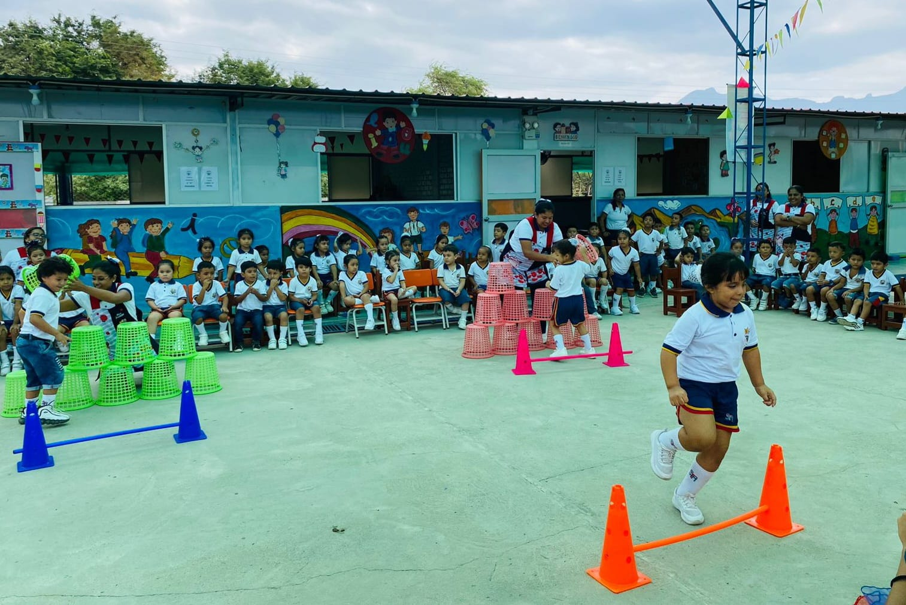
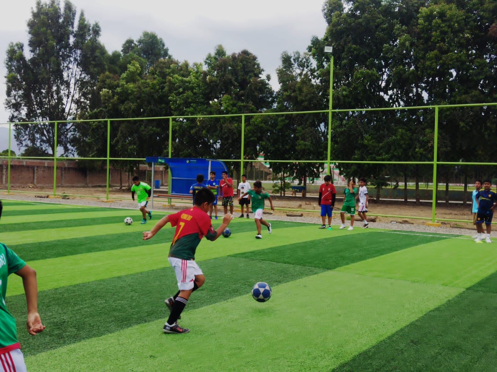
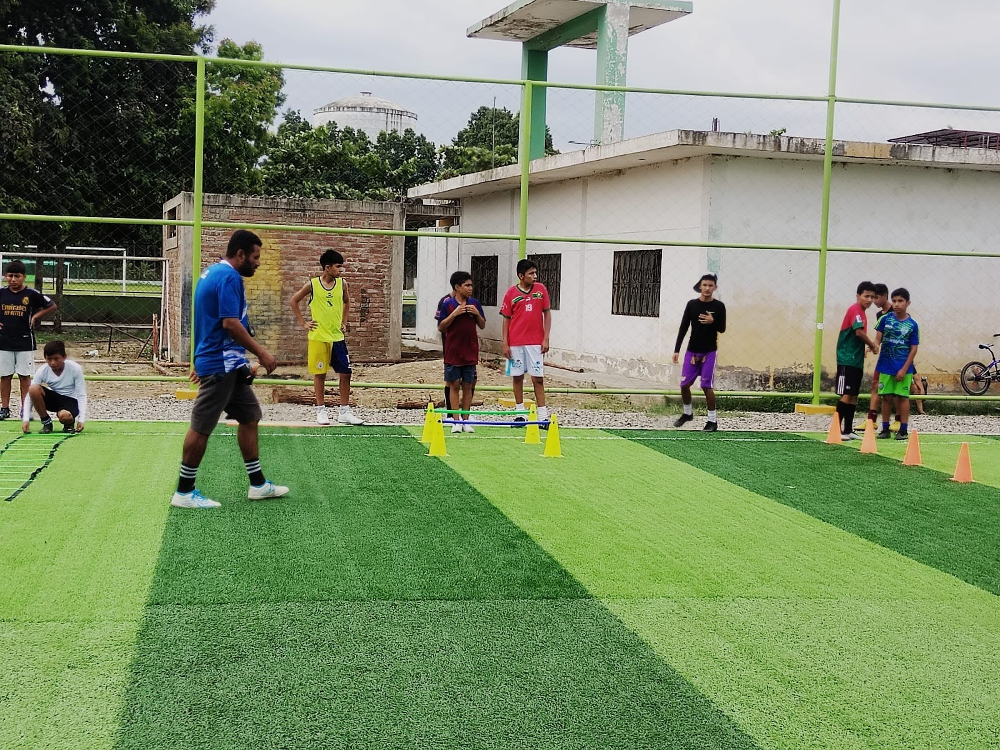
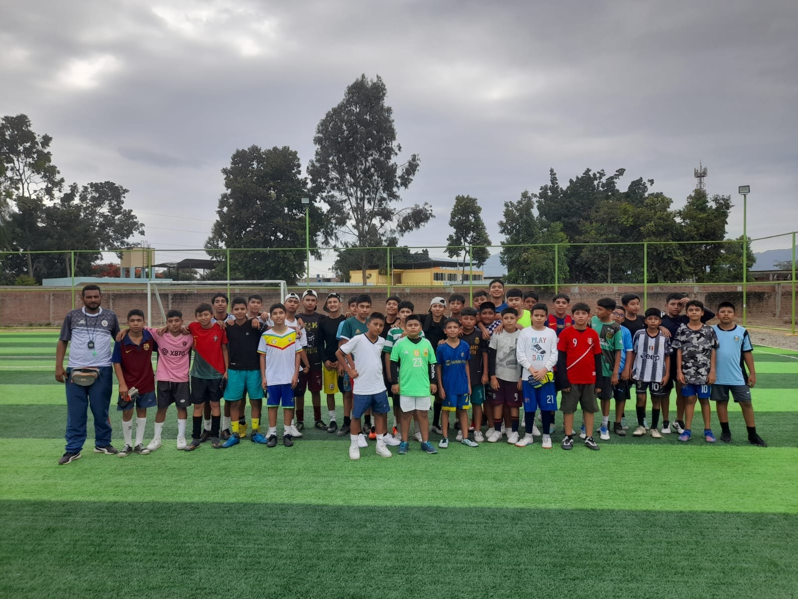

![]()

Formacion Deportiva
Nivel Inicial
Siendo conocedores que los primeros esquemas mentales se forjan a partir de la actividad motriz y que se debe aprovechar la plasticidad del cerebro estimulando la generación de la mayor cantidad de conexiones neuronales que sean la base de futuros aprendizajes generales, en el nivel inicial trabajamos todos los días desde dos áreas concretas para lograr estos objetivos: La Psicomotricidad y los circuitos neuro-motores, áreas que favorecen el desarrollo integral de nuestros niños a través de la exploración, investigación, manejos de emociones, resolución de conflictos, relaciones interpersonales, entre otros.


Nivel Primaria
El Deporte Formativo se brinda mediante una adecuada secuencia del desarrollo motor en los seis años de Educación Primaria, durante los cuales nuestros alumnos llevarán cada uno de los deportes que nuestra institución brinda dentro de la integralidad de su educación, garantizando el poder obtener un nivel básico e intermedio de conocimientos técnicos y teóricos relacionados a los deportes realizados.
Nivel Secundaria
En la secundaria, ya con una base bien estructurada y en busca de establecer un hábito saludable para su futura vida adulta, nuestros alumnos podrán elegir libremente un deporte que les permita mantener la condición física en estado óptimo previniendo así las diferentes enfermedades que ahora son producto de la inactividad física, además de permitirles, con perseverancia y esfuerzo, alcanzar niveles técnicos y volitivos necesarios para ser miembro de una de las diferentes selecciones deportivas de nuestro Colegio.

Selecciones Deportivas
Las selecciones deportivas abarcan a todos aquellos alumnos que destaquen por encima del promedio del deportista común y quienes se encargarán de representar a nuestra Institución Educativa en los diferentes eventos deportivos que se organicen a nivel regional, nacional e internacional. El deportista seleccionado tendrá una mayor exigencia tanto en lo académico, conductual, actitudinal y por supuesto en lo deportivo ya que tendrá que cumplir con el perfil de Deportista Toribiano que deseamos formar. Nuestras selecciones son las siguientes:
